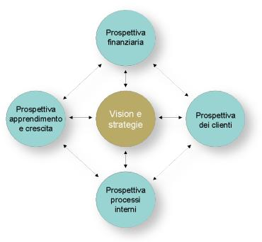
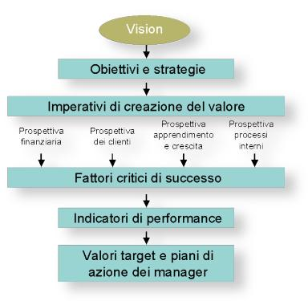

Balanced Scorecard,
una bussola per orientare l’azienda
di Nicolò
Occhipinti
Sviluppata negli anni ‘90, la metodologia del Balanced Scorecard viene
finalmente adottata da un numero crescente di imprese. Un nuovo approccio
per realizzare strategie di successo e gestire con efficacia il
cambiamento.
I tradizionali sistemi finanziari di misurazione delle prestazioni e
monitoraggio delle strategie dell’impresa si rivelano sempre più
inadeguati a rappresentare in modo corretto la capacità di generare valore
nell’attuale contesto economico. Oggi è diventato un fattore critico di
successo la capacità di creare valore investendo nella ricerca,
nell’innovazione, nei processi, nelle relazioni coi clienti, con i
fornitori e con i dipendenti. E’ fondamentale, pertanto, che un moderno
sistema di monitoraggio tenga in debita considerazione la capacità
dell’impresa di trarre benefici anche dal proprio patrimonio di risorse
intangibili: l’acquisizione di nuove competenze e lo sviluppo delle
risorse “invisibili” potrebbero comportare un peggioramento delle
performance finanziarie a breve termine, benché siano di vitale importanza
per la sopravvivenza e lo sviluppo dell’impresa.
Il Balanced Scorecard (BSC), strumento di sorveglianza strategica
ideato nello scorso decennio da Norton e Kaplan, si pone l’obiettivo di
rimediare ai limiti dei modelli di monitoraggio tradizionale, così come di
tradurre le strategie competitive in indicatori di performance (scorecard)
assicurando l’equilibrio (balance) tra le prestazioni di breve
termine, misurate attraverso parametri di natura finanziaria, e quei fattori
non finanziari che dovrebbero condurre l’impresa a prestazioni competitive
superiori e sostenibili nel tempo.
Le imprese italiane hanno cominciato da poco tempo ad adottare il
Balanced Scorecard. Secondo una recente ricerca sul grado di diffusione del
BSC in Italia, svolta dall’Università Cattaneo-LIUC in collaborazione con
OutlookSoft Italia, un quarto delle imprese intervistate ha adottato o si
sta avvicinando alla Balanced Scorecard. E’ una percentuale non elevata
rispetto a quella di altri Paesi e alla rilevanza che lo strumento ha
nell’aiutare a tradurre la strategia in azioni di gestione operativa,
fornendo input strategici al budget. Tuttavia sembra che il BSC, come
modello per un efficace controllo di gestione, avrà una diffusione anche in
Italia pari a quello che oggi ha il budget.
La struttura del Balanced Scorecard
Il Balanced Scorecard suggerisce di guardare l’organizzazione da quattro
differenti prospettive:
- la prospettiva dei clienti;
- la prospettiva dei processi interni di gestione;
- la prospettiva dei processi di apprendimento e di crescita;
- la prospettiva finanziaria.
Per ciascuna prospettiva, il metodo richiede di definire delle metriche,
collezionare i dati e analizzarli.
Nella prospettiva dei clienti, l’attenzione è focalizzata sulle
performance dell’organizzazione così come sono percepite dai clienti, nella
consapevolezza che se i clienti non sono soddisfatti, troveranno prima o poi
altri fornitori capaci di venire incontro alle loro esigenze. Prestazioni
scadenti secondo questa prospettiva sono indice di un futuro declino
dell’impresa, anche se i risultati finanziari possono apparire buoni. Gli
indicatori chiave da utilizzare sono quelli capaci di misurare la capacità
di soddisfare il target di mercato: tasso di fedeltà, grado di soddisfazione
del cliente, tasso di acquisizione di nuovi clienti, redditività per
cliente, quota di mercato, ecc.
Nella prospettiva dei processi interni di gestione, vengono
analizzati e monitorati quei processi che esercitano il maggiore impatto
sulla creazione di valore e sul consolidamento delle relazioni di mercato
(ad esempio, il processo di innovazione dei prodotti, il processo
distributivo, il processo di assistenza post-vendita). Le metriche da
utilizzare misureranno l’efficienza ed l’efficacia di tali processi,
consentendo ai manager di conoscere in ogni momento l’andamento del business
e se i prodotti e i servizi rispondono alle esigenze dei clienti.
La prospettiva dei processi di apprendimento e di crescita
considera l’attitudine dell’organizzazione e dei singoli individui al
miglioramento attraverso l’apprendimento continuo. I rapidi mutamenti
tecnologici e culturali caratterizzanti l’attuale contesto socio-economico,
infatti, richiedono un continuo miglioramento delle capacità dell’impresa a
svolgere quei processi che creano valore per i clienti e per gli azionisti.
Gli indicatori utili a misurare i processi di apprendimento e crescita
comprendono il grado di soddisfazione e il tasso di fedeltà dei dipendenti,
il livello di formazione e il grado di professionalità del personale, la
capacità di trasferire la conoscenza e il livello di eccellenza dei sistemi
informativi.
La prospettiva finanziaria considera il punto di vista e le
aspettative degli azionisti. Il modello di Kaplan e Norton non trascura la
necessità di monitorare anche i tradizionali parametri economico-finanziari,
ma richiede di “bilanciare” questo tipo di indicatori con quelli relativi
alle altre tre prospettive.

Figura 1 – Struttura base del Balanced Scorecard
Il processo di costruzione del Balanced Scorecard
Il Balanced Scorecard può essere costruito secondo un processo di tipo
top-down, anche se è assolutamente richiesto il coinvolgimento e la
condivisione di obiettivi strategici ed operativi da parte di tutti i
livelli aziendali.
La fig. 2 mostra come questo processo prevede innanzitutto la definizione
della vision aziendale, quindi la determinazione degli obiettivi e delle
strategie dell’impresa e la loro traduzione in imperativi di creazione del
valore, corrispondenti alle quattro prospettive interessate dal Balanced
Scorecard. Dovranno poi essere individuati i fattori critici di successo
relativi al raggiungimento degli obiettivi di ciascuna prospettiva e
identificati gli indicatori di performance ad essi collegati. Verranno di
seguito fissati i valori target che l’impresa si prefigge di raggiungere per
ciascun parametro di performance misurato, e ogni singolo obiettivo sarà
assegnato alla responsabilità di un manager che dovrà conseguirlo
predisponendo adeguati piani di azione.
Il modello costruito non dovrà però essere inteso in maniera rigida, ma
adattato al campo di applicazione e alle caratteristiche del business,
ricercando sempre il giusto equilibrio che soddisfi gli interessi di tutti i
portatori di interesse dell’impresa.

Figura 2 – Il processo di costruzione del Balanced Scorecard
Vantaggi e criticità del sistema
Il Balanced Scorecard fornisce le basi per realizzare strategie di
successo e gestire efficacemente il cambiamento in un’impresa. Esso
costituisce uno strumento capace di unificare in un unico sistema integrato
la definizione della vision aziendale, il sistema di monitoraggio
delle strategie e la valutazione delle performance dei singoli manager.
La costruzione di un sistema di Balanced Scorecard obbliga il personale a
inquadrare in modo differente la propria organizzazione e il proprio lavoro
e a pensare in modo strategico. Esso comporta spesso sensibili cambiamenti
all’organizzazione e richiede che siano sviluppate e introdotte nuove
politiche e procedure aziendali. Per molte imprese, questi cambiamenti
possono essere problematici.
Per questo motivo, è essenziale dedicare molta attenzione alla
preparazione dell’impresa al cambiamento e introdurre gradualmente il
sistema a partire, ad esempio, dalle sue business unit. E’ altresì
fondamentale individuare le metriche più adatte a rappresentare il
funzionamento dell’impresa e le sue capacità di creazione del valore.
Determinare le giuste metriche, però, risulta spesso un’operazione lunga e
difficoltosa, in particolare quando si riferiscono a fenomeni di natura non
economico-finanziaria. Ma soprattutto non deve essere sottovalutato il
coinvolgimento di tutti i livelli aziendali nella metodologia da seguire e
nella definizione degli obiettivi da raggiungere. Uno dei principali motivi
di insuccesso del metodo, infatti, è rappresentato dalla decisione di
delegare la costruzione del Balanced Scorecard ad uno specifico comitato e
di renderlo operativo senza il necessario commitment da parte dei
manager che dovranno poi operare per raggiungere gli obiettivi prefissati.
Riferimenti bibliografici
- Alberto Bubbio, “Il grado di diffusione della balanced scorecard nelle
imprese italiane: alcune riflessioni sui risultati di una ricerca”,
Balanced Scorecard Review
www.balancedscorecardreview.it/c2005/c0501.htm
- Sicca L., La gestione strategica dell’impresa, CEDAM, Padova,
2003
- Robert S. Kaplan, David P. Norton, Balanced scorecard. Tradurre la
strategia in azione, Isedi, 2002
- Eric Berkman, “Hot to use the Balanced Scorecard”, CIO Magazine, May
15, 2002,
www.cio.com/archive/051502/scorecard.html
- Paul Averson, “What is the Balanced Scorecard?”, The Balanced
Scorecard Institute, 1998,
www.balancedscorecard.org/basics/bsc1.html
© 2005 - Eccellere - Business Community
|